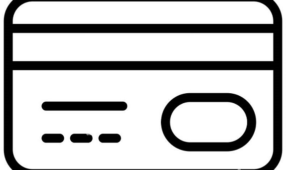

Pantalón Jordan Flc Core
$21.999
Conocé las promociones
O en hasta 3 cuotas sin interés de $7.333
Talle
S
M
L
XL
Descripción
Con el Pantalón Jordan Flc Core, el confort se hace parte de tu vida. Unos pantalones hechos para trasladar la comodidad de tu casa a tus planes por la ciudad gracias a su tejido French Terry que se siente suave en el exxterior y está cepillado en el interior. Además, su cintura elástica regulable es ideal para la libertad de tus movimientos, tanto que sentirás que no llevas nada puesto. Los puños, agregan un detalle moderno destacable y los bolsillos son la opción ideal para tus objetos pequeños como llaves o auriculares. El jumpman en el frente es el sello de tu estilo personal. Una prenda que no puede faltar en tu ropero!
Género: Mujer
Material: Algodón
Bolsillo: Con Bolsillo
Cintura: Con Elástico
Origen: Importado
Marca: Nike
Adecuado para: Todo el día
Estilo de indumentaria: Liso
Garantía: Contra defecto de fabricación.
País del fabricante: Singapore
Composición: 80% algodón, 20% poliéster